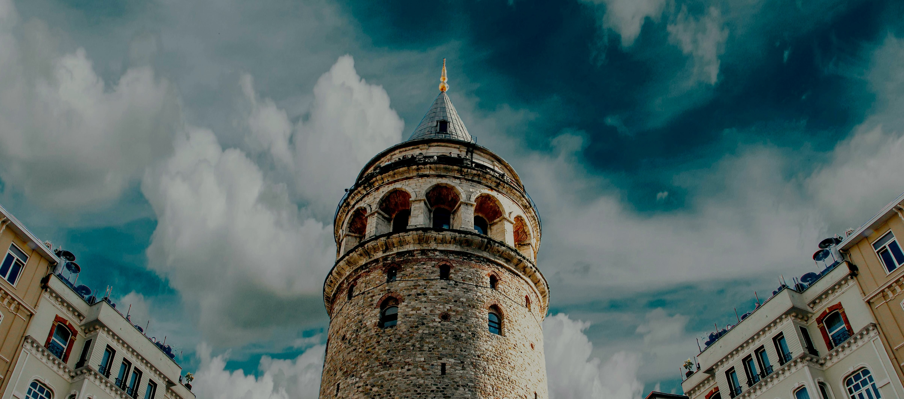

İstanbul'da Gezilecek Yerler:
İstanbul, Türkiye'nin kültürel ve tarihi zenginlikleriyle dolu bir şehridir. İstanbul'un tarihi, binlerce yıl öncesine dayanmaktadır ve birçok farklı medeniyetin izlerini taşımaktadır. İstanbul'u gezerek keşfetmek istiyorsanız, aşağıda bazı önemli tarihi ve turistik yerlere göz atabilirsiniz:
- Galata Kulesi
- Ayasofya
- Topkapı Sarayı
- Kapalı Çarşı
- İstiklal Caddesi
- Dolmabahçe Sarayı
- Selimiye Camii
- Miniatürk
Galata Kulesi, İstanbul'un Galata semtinde yer alan tarihi bir kuledir. İstanbul'un simgelerinden biri olan kule, şehrin tarih boyunca önemli bir noktasında bulunmaktadır. Genellikle Cenevizliler tarafından inşa edildiği düşünülmektedir, ancak kesin yapım tarihi tam olarak bilinmemektedir. 14. yüzyılda inşa edildiği tahmin edilmektedir.
Ayasofya Camii, İstanbul'da bulunan tarihi bir yapıdır. MS 537'de Bizans İmparatoru I. Justinianus tarafından kilise olarak inşa edilmiştir. 1453'te Osmanlılar döneminde camiye dönüştürülmüş ve uzun yıllar İslam ibadetleri için kullanılmıştır. 1935 yılında müze olarak hizmet vermeye başlamıştır. Ancak 2020'de yeniden cami statüsüne dönüştürülmüş ve ibadete açılmıştır. Mimari açıdan da büyük bir değeri bulunmaktadır.
Topkapı Sarayı, İstanbul'da Osmanlı İmparatorluğu'nun merkezi ve sultanların konutu olarak kullanılmış tarihi bir saraydır. Günümüzde müze olarak hizmet verir. Harem, Divan-ı Hümayun gibi önemli bölümleri ve zengin müze koleksiyonlarıyla dikkat çeker. İstanbul ziyaretinizde mutlaka görmenizi öneririm.
Kapalı Çarşı, İstanbul'un tarihi yarımadasında bulunan ve dünyanın en eski ve en büyük kapalı çarşılarından biridir. 15. yüzyılda Osmanlı döneminde inşa edilmiştir. Geniş bir alana yayılan çarşı, binlerce dükkanıyla ziyaretçilere çeşitli ürünler sunar; mücevher, halı, gümüş, deri ürünleri, tekstil ve daha fazlası burada bulunabilir. Kapalı Çarşı, tarihî atmosferi, alışveriş olanakları ve mimarisiyle İstanbul'un önemli turistik mekanlarından biridir.
İstiklal Caddesi, İstanbul'un Beyoğlu semtinde yer alan ve şehrin en ünlü caddelerinden biridir. Tarihi boyunca pek çok dönüşüm geçirmiş olan cadde, Osmanlı döneminde Pera olarak bilinen bölgenin ana arteri olarak önem kazanmıştır. İstiklal Caddesi, tarihi ve modern mimarisi, alışveriş olanakları, restoranlar, kafeler, sanat galerileri, sinemalar ve müzeler gibi çeşitli kültürel ve ticari mekanlarıyla bilinir. Ayrıca, cadde üzerinde yer alan tarihi tramvay hattı da İstiklal Caddesi'nin simgelerinden biridir. İstanbul'un canlı ve renkli yaşamına tanıklık etmek isteyen ziyaretçiler için önemli bir cazibe merkezidir.
Dolmabahçe Sarayı, İstanbul'un Beşiktaş semtinde bulunan ve Osmanlı İmparatorluğu'nun son dönemlerindeki önemli bir saraydır. 19. yüzyılda Sultan Abdülmecid tarafından inşa ettirilmiştir. Avrupai tarzda yapılmış olan saray, Osmanlı İmparatorluğu'nun modernleşme çabalarını yansıtır ve mimari açıdan oldukça görkemlidir. Dolmabahçe Sarayı, Sultan Abdülmecid'den son Osmanlı padişahı Vahdettin'e kadar birçok Osmanlı padişahı tarafından kullanılmıştır. Saray, içinde barındırdığı lüks mobilyalar, kristal avizeler, halılar ve diğer dekoratif öğelerle dikkat çeker. Günümüzde Dolmabahçe Sarayı, müze olarak ziyaret edilmekte olup, İstanbul'un önemli turistik mekanlarından biridir.
Selimiye Camii, Osmanlı İmparatorluğu'nun büyük mimarı Mimar Sinan tarafından 1568-1575 yılları arasında Edirne'de inşa edilmiş olan muhteşem bir camidir. İslam dünyasının en önemli yapılarından biri olarak kabul edilir. Cami, klasik Osmanlı mimarisinin en mükemmel örneklerinden biri olarak görülür ve Mimar Sinan'ın ustalığını ve estetik anlayışını yansıtır. Kubbeleri, minaresi ve süslemeleriyle dikkat çeken Selimiye Camii, UNESCO Dünya Mirası Listesi'nde yer alır ve ziyaretçiler için önemli bir kültürel ve tarihî merkezdir. Edirne'nin sembolü haline gelmiş olan bu cami, Osmanlı döneminin önemli bir mirasıdır.
Miniatürk, İstanbul'da bulunan ve Türkiye'nin dört bir yanından önemli yapıların minyatürlerinin sergilendiği bir açık hava müzesidir. Türkiye'nin çeşitli bölgelerinden, tarihi ve kültürel öneme sahip yapıların minyatürleri burada ölçekli olarak sergilenmektedir. Müze, ziyaretçilere Türkiye'nin tarihî ve kültürel mirasını tek bir yerde keşfetme fırsatı sunar. Ayrıca, Miniatürk'te yer alan interaktif alanlar ve etkinliklerle ziyaretçilerin eğlenceli vakit geçirmeleri sağlanır. İstanbul'un turistik mekanlarından biri olan Miniatürk, yerli ve yabancı turistlerin ilgisini çeker.